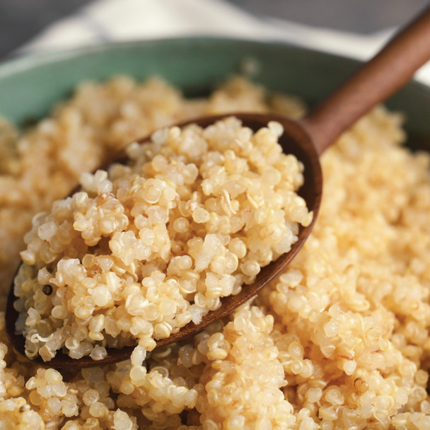

Home
Quinoa Recipe

Learn how to cook perfect, fluffy quinoa at home! Organic quinoa is a nutritious grain-like seed that is naturally free from gluten, packed full of protein and is a great alternative to rice. Perfect in salads and can even be served as porridge!
Ingredients
- The ratio is two cups of water for every cup of quinoa
Steps
- Rinse quinoa thoroughly to remove any natural bitter flavour.
- Add rinsed quinoa and cooking liquid to a medium saucepan, then bring to a boil.
- Reduce heat to low, cover and simmer until tender and most of the liquid has been absorbed (10 to 15 minutes). You can tell that it's cooked when it is a little translucent in the centre and looks like it has a circular 'tail'.
- Fluff with a fork and season if desired.
- Add to salads or use as a side dish in place of rice.